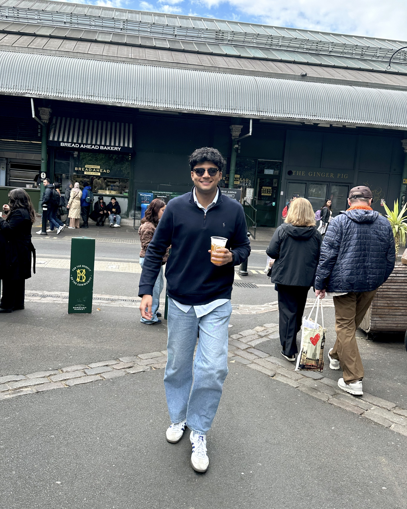

KAUSTUBH MATHUR · COMPUTER SCIENCE + BUSINESS
Big ideas.
Real-world impact.
Explore the tools, pipelines, and analytics I build to make complex operations simpler.
Explore my projects
Kaustubh Mathur
University of Cincinnati · Class of 2027
SELECTED IMPACT
$19.1M
Q3 cost savings identified at Delta Air Lines
You’re viewing Kaustubh’s portfolio. Explore the work, save projects for later, or get in touch.
Results that matter
$19.1M
Q3 savings identified
98% faster
Bid shell generation
~70%
Less manual data processing
See the work behind the numbers
Meet the person behind it

CS student. Business thinker.
Formula 1 fan.
Your next analyst?
Computer Science meets Business Administration.
FULL-TIME OPPORTUNITIES
May 2027
Start a conversation
Analytics · Data · Technology
Featured work
Explore the collectionPORTFOLIO / PROJECT COLLECTION
Explore my projects
No matching projects
Try a different search or clear your filters.
About Kaustubh
COMPUTER SCIENCE × BUSINESS ANALYTICS
Technical foundation. Practical thinking.
I’m a Computer Science student at the University of Cincinnati with a Business Administration minor. My work connects data, technology, and the decisions people need to make.
At Delta Air Lines, I’ve built automation and analytics for workforce operations. At UC, I’ve developed research data tools and supported engineering students as a teaching assistant.
Outside work, I’m into Formula 1, the gym, and exploring emerging tech.
Connect on LinkedIn- Education
- B.S. Computer Science
- Minor
- Business Administration
- University
- University of Cincinnati
- Graduation
- May 2027
- Location
- Cincinnati, Ohio
Work history
D
Business Analyst Co-op
Delta Air Lines · ACS Field Support
Aug 2024 – Aug 2026
Atlanta, GA · three co-op rotations
- Built end-to-end pipelines that connect AWS databases to Python and Power BI, cutting manual data processing by about 70% and enabling near-real-time operational reporting.
- Set up AWS S3 Tables and Apache Iceberg for lakehouse-style storage and backup, speeding up data retrieval for production analytics.
- Developed an automated SAS pipeline that cleans HR and scheduling data and joins headcount to station-level records to derive weekly attrition trends. It feeds a Power BI semantic model that informed $2.3M a month in staffing cost savings.
- Automated bid shell generation with a Python pipeline over scheduling data, cutting processing time by 98% (8–9 minutes to 5–10 seconds).
- Built a Python pipeline that produces formatted Excel and PDF staffing reports for dozens of airport stations, with automated chart extraction and data-driven narrative, replacing a manual process for the whole team.
- Analyzed Baggage AI post-deployment data, measuring a 30% improvement in baggage transfer efficiency, and built Python and Power BI pipelines that monitor station KPIs and surface regressions for ops teams.
UC
Undergraduate Research Assistant
University of Cincinnati
Jan 2024 – Aug 2024
Cincinnati, OH
- Built Python data quality tools that enforce field types, range checks and cross-table consistency rules across 1,000+ records, cutting manual entry errors by 60% and speeding integration for a 9-person research team.
- Helped standardize engineering Plans of Study across the U.S.
- Co-authored research papers and documented the work so others could reproduce it.
UC
Teaching Assistant
University of Cincinnati
Aug 2023 – Aug 2024
Cincinnati, OH
- Supported the Foundations of Engineering Design Thinking course and tutored 72 students.
- Handled project questions between students and professors.
- Trained 10 new TAs on course standards and lab safety.
Skills & credentials
Programming & data
Python · SQL · SAS · VBA · MATLAB · Teradata · HTML · JSON
Visualization & automation
Power BI · Tableau · Excel · Power Apps · Power Automate
IBM Full Stack Software Developer
HTML, CSS, JavaScript, React, Kubernetes and DevOps pipelines.
Google IT Automation with Python
Scripting, Git, cloud resources and automation.
Let’s talk about what’s next.
Open to full-time roles starting May 2027 and conversations about analytics, automation, and technology.
Email Kaustubhmathurkh@mail.uc.edu